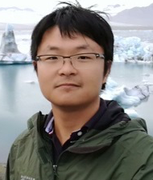
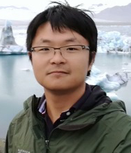

I'm looking for a new kind of next generation Ph.D. student. Is it you?
I'm alarmed at SE for AI practices-- a headlong rush to "ship it" without thinking about what "it" is and who it might hurt. So I've been working, quite successfully, on issues of fairness and ethics. That said, the results to date only highlighted just how much more work is needed to make "fairness" scalable and practical.
So now I seek a new kind of Ph.D. student-- Not one just focused on data mining and rushing out to get a standard industry job. I'm looking for someone who wants to be more reflective, more radical, and wants to use their Ph.D. to explore issues related to trusted communication and how to offer more respect and power to the people that use our software.
If that is you, then I can train you to a very different kind of career path that is waaaaaaaaaay ahead of the curve. Sure, you will explore state-of-the-art data mining methods (and other algorithms). But your Ph.D. will position you to become a leader in the ethical future of software.
Interested? Then read a little more about that work. And maybe drop me a line? Or apply for grad study at NC State?
News
About me

Tim Menzies (IEEE Fellow, Ph.D., UNSW, 1995) is a full Professor in CS at North Carolina State University where he teaches software engineering, automated software engineering, and foundations of software science.
He is the directory of the RAISE lab (real world AI for SE) and
the author of over 280 referred publications. In his career, he has been a lead researcher on projects for NSF, NIJ, DoD, NASA, USDA (funding totalling over 13 million dollars) as well as joint research work with private companies.
Prof. Menzies is the editor-in-chief of the Automated Software Engineering journal and associate editor of IEEE Transactions on Software Engineering (and other leading SE journals).
For more, see his web site http://menzies.us or the text of his successful IEEE Fellow nomination
- Awards
-
- IEEE Fellow, 2018
- Author of one of SE's 20-most cited papers (cites/year);
- Distinguished paper award, FSE'21
- Distinguished paper award, ICSE'19
- Most influential paper award, ICSME'19
- 2017 Inaugural MSR Foundational Contribution Award
- Locally, Google Scholar ranks me as the second-most cited author in CS at NCSU.
- Internationally, Google Scholar ranks me:
- first for search-based SE and defect prediction;
- second for effort estimation;
- and third for expert systems and software analytics.
- Publications
- H-index: 67 (Oct'22).
- Grad students
- Ph.D.: 6 current. 18 past.
Masters (by research): 32 - Papers
- 108 journal + 137 conference + 86 other
- Funding
- Total= $13.3 million (total). From many sources, e.g.:


- Journals
-
editor-in-chief: Automated Software Engineering journal
assoc. ed.: TSE, CACM, IEEE Software
editorial board: JSS. SQJ
advisory board: EMSE
prior: assoc. ed. IST, TOSEM, ASEJ, Big Data Research, IET Software - Conferences
-
co-general chair: ICMSE'16; RAISE'19, PROMISE'05..'12
co-PC chair: ASE'12, NEIR'15, SSBSE'17, PROMISE'20
artifacts co-chair:ASE'21, ICSE'20, ASE'20, FSE'18, FSE'16
program committees: ICSE'23, SANER'23, ICSE'22, IJCAI'22, AAAI'22, ICML'22, MSR'22, ESEM'22, IJCAI'21. AAAI'21, ICSE'21, MSR'21, ASE'20, ICSE'20, ESEM'20, FSE'19, ASE'19, MSR'19, SSBSE, PROMISE,... - Professional
- Roving member, IEEE Technical Council on SE. 2022, 2021
- Government work
-
NASA software research chair: 2002-2004
NSF panelist: 13 times (2003-2020)
Interested in Graduate Study?
It is no longer enough to do "it" faster. Now we have to do "it" fairer.
So I seek talented Ph.D. graduate students for AI + SE, specifically in the area of explanation and fairness.
Does that interest you? If yes review these notes before applying.
Current Ph.D.


Graduated Ph.D.


 

Information:
Interested in Industrial Research Opportunities?
I work with industry. A lot. Ask me how to innovate. On time. On budget.
Read my industrial case studies:
Current Projects
All:
- Total
-
$13.3 million (total). From many sources.
Funded:
- Facebook/Meta
- Good via construction
$150,000
Can analytics be made fair, by the way it is built?
Mr. Andre Lutosa: papers.
Mr. Kewen Peng: papers.
Ms. Lauren Alvarez - LAS
- Using explanations/deep learning to improve deep learning
$135,000 - NSF1
- What can we learn from 10,000 Projects?
$499,000
Mr. Rahul Yedida: papers.
Ms. Xueqi Yangs: papers. - NSF2
- Empirical SE for computational science
$592,000
Other:
Mr. Xiao Ling: papers.
Recent:
- NSF3
- Science of Vulnerability Detection
$249,000 - IBM1
- Designing cloud-based micro-services
$40,000 - IBM2
- Racial and Gender Bias Mitigation
$40,000
Simpler solutions to seemingly hard problems.

William of Occam: It is vain to do with more what can be done with less.
Edsger W. Dijkstra: Simplicity is prerequisite for reliability.
Dieter Rams: Less is more.
timm: less, plz

The physicist John Archibald Wheeler advised that "in any field, find the strangest thing and explore it." Accordingly, I explore the strangest thing about software—that it ever works at all.
Modern software is so complex that it should never work. So why aren't our incomplete test methods missing all too many critical errors? My research keep showing is that most software systems have "keys"; i.e. a few variables that control the rest. Outside SE, I have seen keys in hospital nutrition analysis and avionics control systems. Within SE, I’ve found keys while doing analytics for:
- requirements models for NASA
-
deep-space missions and information systems for university
departments>/a>;
- defect-prediction data sets;
- effort estimation models;
- numerous software process models
Outside SE, there is a long history of researchers reporting effects that are similar to the keys effect, dating all the way back to 1901 (see the first paper on principal components analysis). Since then, what I would call "key” have been reported many times in the AI literature. For example, data mining researchers report that most rows and columns in a data set can be discarded without losing the signals in those data. Also, when a randomized search is repeated many times, there is often a small number of variable settings shared by all solutions (which I would call "keys"). Furthermore, when researchers set those variables initially, then formerly exponential runtimes collapsed to low-order polynomial time.
Regardless of whether we are talking about AI or SE, when systems consist of just a few keys, then it is very simple to audit, understand, and modify them. For example, effective defect prediction or effort estimation is possible using less than half a dozen variables; Additionally, configuring complex systems is often remarkably simple and effective and can be achieved using very small decision trees that require only a few variables. Furthermore, by generating tests only for the main branches in the code, even applications that process large cloud databases can be tested via just a few dozen inputs. Hence, one reason to explore keys is to create ethical systems that enable community reflection and modification for AI software.
In any case, for decades, I've been applying the following heuristic:
- If it works ...
- ... throw something away and see if the simpler system works.
- Configuration of cloud computing environments;
- Deep learners for SE
- Reading the literature, very rapidly
- Studying thousands of projects to find a small number of most representative projects
- Helping people finding the core variables inside complex models
- Building fairer predictive models
- Building models using only a small fraction of the labels
- Tuning complex models very quickly
- Finding ways to dodge evil AI trying to inject you with a virus
- And more applications as well...
IEEE Fellow Nomination (2018)

(With apologies for excess hyperbole...)
Internationally known for revolutionary advances exploring the synergy between artificial intelligence (AI) and software engineering (SE), Dr. Menzies has authored four books and over 260 refereed publications. His publications, with over 9000 citations, have appeared in leading journals and proceedings of prestigious conferences. He has supervised seven students earning PhDs and 23 MS thesis students. Dr. Menzies' distinctive contributions have had enormous impact for SE researchers and practitioners in software quality prediction and software optimization.
SOFTWARE QUALITY PREDICTION
Because software plays a critical role in industry, government, and society itself, improving software quality is critical. In landmark papers in 2006 and 2007, Dr. Menzies was an early pioneer in applying data mining and AI to software quality predictors, introducing a method which identified software modules likely to contain defects. This method had a 71 percent mean probability of defect detection, significantly higher than the code inspections commonly used in software practice.
In his software quality prediction research, Dr. Menzies identified a serious problem: often, the analysis in SE papers is not reproducible because data underlying the analysis is unavailable. To address this problem, Dr. Menzies developed PROMISE, a public data repository of software data, in 2005 publishing a paper introducing PROMISE and co-founding the PROMISE workshop, so successful it became a conference in 2008. Today, the PROMISE repository contains hundreds of data sets used in thousands of papers by researchers around the world.
OPTIMIZATION OF SOFTWARE-INTENSIVE SYSTEMS
Dr. Menzies is a pioneer in applying data miners to optimize software-intensive systems. In 2002, he discovered that analyzing such systems with data miners augmented with genetic algorithms led to faster analysis and better optimizations. Even for systems with millions of configuration options, Dr. Menzies' optimizers quickly learn how to make code run quicker, make web servers handle more traffic, and compile programs faster. Dr. Menzies' optimizers have been applied at NASA for reasoning about safety-critical aerospace software.
Dr. Menzies has also applied his optimization techniques to understand the unstructured textual components of software artifacts and software research papers. His was one of the earliest successful efforts applying text mining and AI to the notes of software test engineers. By identifying anomalous reports that required a second opinion, he could increase assurance of NASA systems while reducing the overall effort required to achieve that assurance. Recently, he has designed tools that can review 10,000s of papers to learn the structure of the SE scientific community. These tools can guide researchers and practitioners to find relevant work that might otherwise be overlooked.
Dr. Menzies' contributions to SE and AI are widely recognized. For his research, in 2017, Dr. Menzies received the MSR (Mining Software Repositories) Foundational Contribution Award as "Recognition of fundamental contributions in the field of data mining software repositories which helped others advance the state of the art." International databases of scholarly achievement rank Dr. Menzies number three world- wide both in software analytics and in SE and data mining. Recently, Dr. Menzies clustered 35,000 papers from the last 25 years of top-SE journals and conferences. In the "software metrics" cluster, Dr. Menzies is the top-ranked author. In the papers from top-ranked venues, Dr. Menzies' h-index of 48 places him number 11 overall.
Dr. Menzies' contributions have had world-wide impact in software practice. In 2005, Turkish researchers found that when commercial teams restricted code inspections to 25 percent of the files identified by Dr. Menzies' methods, they detected 88 percent of the existing code defects. In 2005, his students commercialized his defect detection methods in the Predictive tool suite, subsequently purchased by companies such as Chevron, Northrop Grumman, LogLogic, Inc., and Compagnie Financière Alcatel, to find code defects. In 2017, the US Software Engineering Institute used Dr. Menzies' optimizers to guide discussions about costly updates to Department of Defense software.
NASA has benefited enormously from Dr. Menzies' research. In 2005, as science chair at a NASA facility, he received a commendation award from NASA's Chief of Mission Assurance saying: "...A great researcher in his own right, ...Tim has raised the bar on quality and level of work [expected] from our researchers." NASA used his algorithms in 2008 to find violations in Space Shuttle launch requirements; in 2010, to quickly explore the design of next-generation new Air Traffic Management concepts; and in 2017 to find better monitoring strategies for pilots flying planes in safety-critical situations. In 2016, based on Dr. Menzies' research, NASA's Jet Propulsion Laboratory created the NASA Analogy Software Cost Model as its official tool for predicting software development costs.
Evidence of Technical Accomplishment
Tim Menzies, Jeremy Greenwald, Art Frank, "Data mining static code attributes to learn defect predictors," IEEE Transactions on Software Engineering, Vol. 33 (1), 2-13, 2007. Dr. Menzies is a pioneer in the development of predictors of software quality learned from data miners. A notable finding of this paper is that Dr. Menzies' methods (including decision trees and Bayesian learning) have a 71 percent mean probability of defect detection--a rate significantly higher than human manual inspections. The paper, with more than 920 Google Scholar citations, is one of the 100 most cited papers in software engineering. Moreover, nine of the 50 most cited papers in the IEEE Transactions on SE (2012-2017) use methods and/or data from the databases used by this paper. Methods for software defect prediction introduced in the paper have been applied commercially around the world. In this paper, Dr. Menzies was the lead researcher -he defined the problem, the technical approach, and designed and coded all of the experiments.
Martin S. Feather and Tim Menzies, "Converging on the optimal attainment of requirements," Proceedings, IEEE Joint International Conference on Requirements Engineering, 2002. Although optimization methods for numerical systems have been used widely, applying these methods is often ineffective in complex software systems where each "if" statement divides the software into regions with different properties. For software, Dr. Menzies found that applying non-numeric optimizers, e.g., simulated annealing or genetic algorithms, is effective. This paper is the first of its kind to reason about solutions to software requirement problems on the Pareto frontier. As witnessed by many papers in the last two years, this method is now widely used by researchers in the software requirements community. For this paper, Dr. Menzies led the AI-part of the research, and designed and implemented the AI algorithm used in the analysis.
Tim Menzies, Andrian Marcus, "Automated severity assessment of software defect reports," IEEE International Conference on Software Maintenance," 2008. This paper, with over 185 citations, describes one of the earliest successful efforts applying text mining methods to the notes of software test engineers. The method introduced in the paper identifies anomalous reports requiring a second opinion, thus increasing software quality assurance while reducing the overall effort required to achieve that assurance. For this work, Dr. Menzies was the lead researcher, defining the overall vision of the paper, as well as building the tools and running all of the experiments.
Natural Language Understanding
- Zhe Yu, Nicholas Kraft, Tim Menzies "Finding Better Active Learners for Faster Literature Reviews". Empirical SE Journal, to appear 2018. This is the first SE application using incremental text mining methods to learn what a reader wants to read. Dr. Menzies showed that a) supposed state-of-the-art text miners from other domains perform poorly for SE, and b) a new method called FASTREAD can quickly guide researchers and practitioners to relevant work that might otherwise be overlooked. Achieving Generalizability in Software Engineering Research
- Burak Turhan, Tim Menzies, Ayse Basar Bener, Justin S. Di Stefano, "On the relative value of cross-company and within-company data for defect prediction," Empirical SE, vol. 38(6), 1403-1416, 2012. This paper shows that useful models for a project can be built by carefully selecting the most relevant examples from other projects. The paper, with more than 180 citations, is one of the five most cited articles of all time in the Empirical SE journal.
Adjusting Learners to Human Needs
- Abdel Salam Sayyad, Tim Menzies, and Hany Ammar, "On the value of user preferences in search-based software engineering: A case study in software product lines", International Conference on Software Engineering, 2013. This paper (134 citations) shows that while most, but not all, optimizers used in software engineering are highly insensitive to complex sets of user preferences, for complex requirements problems, goal-aware reasoning can achieve much better results than standard optimizers used in software engineering.
- Abdel Salam Sayyad, Joseph Ingram, Tim Menzies, Hany Ammar, "Scalable product line configuration: A straw to break the camel's back". Automated Software Engineering Conference, 2013. This paper (86 citations.), which extends the previous paper, is one of the five most cited papers in the IEEE Automated Software Engineering Conference in the last five years. By exploiting the richness of human preferences, the method introduced in this paper can extract usable designs from a space of thousands of goals and hundreds of thousands of constraints. Learning Using Many Opinions
- E Kocaguneli, Tim Menzies, JW Keung, "On the value of ensemble effort estimation," IEEE Transactions on Software Engineering, Vol. 38(6), 1403-1416, 2012. Even though ensemble techniques are widely applied in other domains, they are rarely used in SE. This paper ( 140 citations) showed that any single predictor was less trustworthy than using twelve elite models implemented from an ensemble of 90 learners.
Uncovering Errors in Data Mining
- Tim Menzies, Alex Dekhtyar, Justin Di Stefano, Jeremy Greenwald, "Problems with precision" IEEE Trans SE, 2007. In this paper (155 citations), Dr. Menzies describes a previously undocumented, subtle, and dangerous aspect of precision in a widely-used performance measure. Curiously, this problem had not been previously reported despite the measure's widespread use.
Better Optimizers Using Data Miners
- Tim Menzies, Zach Milton, Burak Turhan, Bojan Cukic, Yue Jiang, Ayse Basar Bener, "Defect prediction from static code features: Current results, limitations, new approaches". Automated Software Engineering, 2010. This paper (197 citations) introduces "WHICH" a meta-learner framework that can be quickly customized for different business goals. Measured in terms of specific user goals, WHICH performs better that many standard learners. Human-Understandable Data Mining Results
- Tim Menzies, Ying Hu, "Data mining for very busy people", IEEE Computer, Vol. 36(11), 2003. Cognitive scientists and researchers studying human decision-making note that humans often use simple models rather than complex ones. This paper (132 citations) describes Dr. Menzies' TAR2 data miner which generates tiny human-readable models, useful for describing to humans many seemingly complex software engineering problems.
How to apply for PhD.
(Prospective students: please be aware that I have a new research direction. Please review those notes before applying.)

Thinking About Graduate Studies?
Please forgive this form letter as a reply but, as you might imagine, I get many such enquiries.
To start the application process, please go to this site.
To help you out, I list below some answers to frequently asked questions.
If the following does not answers your questions then please feel free to email me and I will do my best to reply to your queries.
Best wishes,
Tim Menzies
About Applying
American universities accept new graduate students for start-of-study in mid-August and mid-January.
The application process for those dates starts months in advance. You should be planning your application at least one year before your desired start date. I have no authority to accept students but, once they are accepted, I can supervise graduate students. So please review our admissions procedures at our departmental Web site.
That said, during the admissions review process, all faculty are sent a sheet listing the candidate students and I am allowed to "nudge" a handful of names. So if you elect to enroll here then please ping me so I can watch for your application in the system.
Tips for writing to Professors
When writing to a CS prof in the USA, here is some advice on how to attract their attention.
Do not send a form letter-- we get enough of those.
To prove that you are not sending a form letter, best to make some reference to their current research, perhaps even to one of their recent papers (and how your prior work or interests match up).
Demonstrate that you have done a little homework before sending and email about the department. E.g.
- read over the department's recruitment policies and say things like "I am targeting an application for your next round of applications for (say) January 2016 which I will submit to
".
Working with me
As to me supervising you, I do not take on students until they have completed one of my grad subjects. This lets us check each other out before we commit too much to each other.
As to funding, I do not guarantee that my supervised students get funding from me. Funding comes and goes depending on the whims of the funding agencies and my policy is to fund my long-term Ph.D. students before anyone else.
- That said, for your information, over the last decade, 75% of my students were fully funded.
Thanks to the MSR'17 Award Committee
(and Many Others as Well!)

Mar 15, 2017
This evening I learned that I was the winner of the inaugural Mining Software Repositories Foundational Contribution Award.
According to the award web site, the award is a recognition of fundamental contributions in the field of mining software repositories, which helped others to advance the state of the art.
I was nominated for my work on the PROMISE repository .
I want to thank the committee for the award and I'd like to dedicate the award to the many people whose hard work made the PROMISE repo possible:
- Jelber Sayyad was my original partner in PROMISE. Together, we had the idea in 2004 that SE analytics papers should not only report their results, but also share the data used to achieve those results. Accordingly we started the PROMISE conference series and an associated repo.
- Gary Boetticher worked on the PROMISE conference (and offered advice on the repo) till 2009. He was very influential in those early days and PROMISE (repo or conference) would not have lasted past its infancy without his diligent efforts.
- Tom Ostrand and Elaine Weyuker were very important to the development of the PROMISE conference. The 2005 PROMISE conference meeting was somewhat low energy and Gary and I were considering cancelling the whole thing. But in 2006, Tom and Elaine joined our community, injecting much needed energy and credibility to our meetings. Tom also performed some magic with the ACM Digital Library and, hey presto, suddenly all the PROMISE conference papers become ACM publications.
- Numerous other researchers were kind enough to lend their talents to the organization of the conferences. That list of people is very long and including Ayse Bener, Guenther Ruhe, Stefan Wagner, Ye Yang (and many others, besides).
- Finally, over the years, a small army of students worked on the repo:

- These students regularly scoured the table of contents of SE recent conference proceedings to find new data for PROMISE.
- Many of those former students how have Ph.D.s: Greg Gay, Ekrem Kocaguneli, Joe Krall, Fayola Peters, and Burak Turhan. I hope the connections they made while working on PROMISE will help them in their future careers.
- As to more recent students, special thanks are due to Rahul Krishna for curating the current version of PROMISE; Mitch Rees-Jones for the large scale redesign of the repo web-site in 2014; and David Pryor for many things including all the work with ZENODO (see below).
Why PROMISE?
In this era of Github, GHtorrent, et al. it is hard to recall that only a decade ago, it was difficult to access project data. Nevertheless, that was the case.
Back in 2005 many people in the MSR field were analyzing large amount of (public) open source data but kept the tools and processed datasets to themselves as it was often considered a competitive advantage. In fact, within the MSR community, it was not until 2013 that they started their Data Showcase track to encourage sharing of data.
Meanwhile, back in 2005, I started the PROMISE workshop with Jelber Sayyad that "encouraged" data sharing. I put "encouraged" in quotes, because it actually was a very explicit requirement. Here are part of the 2005 call for papers for PROMISE, which put the following text in all caps:
-
"SUBMISSIONS WHICH
INCLUDE EMPIRICAL RESULTS BASED ON PUBLICLY ACCESSIBLE DATASETS WILL BE GIVEN
THE HIGHEST PRIORITY”
A COPY OF THE PUBLIC DATASETS USED IN THE ACCEPTED PAPERS WILL BE POSTED ON THE PROMISE SOFTWARE ENGINEERING REPOSITORY. THEREFORE, IF APPLICABLE, THE AUTHORS SHOULD OBTAIN THE NECESSARY PERMISSION TO DONATE THE DATA BEFORE SUBMITTING THEIR PAPER."
This emphasis in shared and repeatable results was unthinkable at that time and many people predicted that PROMISE would not last long. Tee hee. We proved them wrong. The PROMISE workshop soon grew into its own stand-alone conference. Due to some cosmic quirk of scheduling, the PROMISE and MSR conferences often meet at the same time, in the same corridor, sometimes even in the next room. But both events had full schedules so we rarely made it to each other sessions. Hence, the conferences evolved differently. The following is Prem Devanbu's attempt to capture the differences (and to misquote George Box, he hopes his model is more useful than it is wrong):
- For the most part, the MSR community was mostly concerned with the initial collection of data sets from software projects.
- Meanwhile, the PROMISE community emphasized the analysis of the data after it was collected.
Now it is true that most MSR people analyzed their data with statistics and ML, and many PROMISE people did spend time in data collection. But where the PROMISE conferences was different and unique was its analysis of the analysis of data. According to Robles et al. at MSR'10 paper, most MSR papers were not concerned with a repeated analysis of data explored by a prior paper. On the other hand, the PROMISE people routinely posted all their data on a public repository and their new papers would re-analyze old data, in an attempt to improve that analysis.
Since 2011, PROMISE stopped scheduling itself at the same time as MSR. This has lead to richer interactions between MSR and PROMISE people. Hence, as time passes, the directions of these two conferences grow less distinct. Today, MSR meets at ICSE and PROMISE meets at ESEM and both events draw international leaders in the field of software data science.
So just to be clear, the "PROMISE project" has two parts:
- a repo;
- an annual conference called "PROMISE", that is currently co-located with ESEM.
This award was given to me for my work on the repo. As to the conference, initially, that conference was tightly connected to the repo (to store the data from papers from the conference). Since then, the scope of the repo has extended to include data from many sources.
As to the PROMISE conference, I was its steering committee chair till 2012 when Stefan Wagner was kind enough to take on those duties. These days, the PROMISE conference is guided by its dedicated and talented steering committee Leandro Minku, Andriy Miranskyy, Massimiliano Di Penta, Burak Turhan, and Hongyu Zhang.
Results from PROMISE
Here's a sample of what was achieved with PROMISE (and if anyone wants to add to this list, just email me at timm@ieee.org):
At the time of this writing, the PROMISE repository includes sharable data on defect prediction, effort estimation, model-based SE, requirements models, performance prediction, over 240,000 real-world spreadsheets (one of the largest collections ever assembled), and many other kinds of data as well.
The early focus of PROMISE was on effort estimation and defect prediction. One of the landmark results here was documenting the business case for the value of such predictors. For example, Misirli et al. (http://www.aaai.org/ojs/index.php/aimagazine/article/viewFile/2348/2216/) report studies where the guidance offered by defect predictors (a)reduced the effort required for software inspections in some Turkish software companies by 72%; (b)while, at the same time, still being able to find the 25% of the files that contain 88% of the defects.
The repo not only greatly influenced effort estimation and defect prediction, but also the field of vulnerability prediction. Several recent state of the art papers in that field use methods first widely described in the process of PROMISE data.
The first examples of successful cross-project learning in defect prediction and effort estimation came from work on PROMISE data. Working with Burak Turhan and Ayse Bener, we used PROMISE data to write a top-ten- most-cited EMSE paper (2009 to 2014) on how to share data between projects (see [On the relative value of cross-company and within-company data for defect prediction" (http://cs.gmu.edu/~offutt/classes/see/papers/turham2009.pdf)", EMSE 2009.
More recent uses of PROMISE include work in software sharing and privacy. Many researchers have reported that as data is anonymized (for privacy purposes), it becomes harder to make conclusions from that data. Using PROMISE data, my Ph.D. student, Fayola Peters, showed that it is possible to share privatized versions of data that hide details about individual projects, while at the same time allowed researchers to build effect predictors for SE quality attributes (see "[Better privacy-preserving data sharing for cross project defect prediction](https://lucas.ezzoterik.com/wp-content/uploads/2016/03/15lace2.pdf)", ICSE’15).
Reviewer Comments
I need to also thank my nominees for their kind words about PROMISE. The following are quotes from those letters.
- "I don't think any other contribution that is even remotely comparable to (PROMISE)."
- "There are many factors that lead to the state-of-the-art in mining software repositories, ... sharing and replicability in the science of software engineering, but in my opinion, none played a greater role than the PROMISE repository, created by Tim Menzies."
- "I can’t think of a stronger contribution right now (to MSR), except maybe the creation of the MSR community by Dr. Hassan."
- "PROMISE makes research results reproducible. For example, according to Robles et al. at MSR 2010, they found that over 95% of 171 papers published at MSR were unreproducible, since their associated data was no longer online. However, nearly all of the papers at the PROMISE conference was reproducible since they were based on PROMISE data. I believe this is a really significant contribution. "
- "Prof. Menzies has enabled and inspired a generation of
SE data scientists to use data to make refutable results. In his own
publications, he makes extensive use of PROMISE data with the express
aim of challenging others to share their data and/or repeat/improve/
or refute his own results.
For example,
his 2007 TSE article
"Data Mining Static Code Attributes to Learn Defect
Predictors"
(https://www.researchgate.net/profile/Tim_Menzies/publication/3189767_Problems_with_Precision_A_Response_to_Comments_on_'Data_Mining_Static_Code_Attributes_to_Learn_Defect_Predictors'/links/0912f50c0549e3cb3d000000.pdf)"
contains
numerous interesting research contributions. But much of
the paper reads like a "how to" guide on software
analytics. All its data was placed online at PROMISE.
This paper is widely cited, to say the least: 770
citations since 2007; most cites per year for any
TSE paper since its publication; one the top100
most cited papers anywhere in the history of SE
(see
[http://dl.acm.org/citation.cfm?id=2874005](http://dl.acm.org/citation.cfm?id=2874005)).
That paper ends with following paragraph:
-
Our hope
is that numerous researchers repeat our experiments
and discover learning methods that are superior to the
one proposed here. Paradoxically, this paper will be a
success if it is quickly superseded.
I find this paragraph inspirational, a shining example
of how to do open science in the Internet age.
Here Dr. Menzies is pleading with the international
research community to outperform his own publication.
Further, by placing all the materials for this paper
online at PROMISE, he is enabling other researchers
to refute his work, if they can."
The Future of the PROMISE Repositor
Now that PROMISE
repository
has achieved international
recognition, it is strange to report that the repo is being
decommissioned.

The ZENODO repo at the CERN Large Hadron Collider offers many services that significantly extend what PROMISE can offer:
- It happily accepts files of up to 50GB.
- It auto-assigns DOIs (digital object identifiers) to all files.
- And if any Github repo is registered at ZENODO, then whenever a new release if tagged in Git, ZENODO automatically grabs a zip copy of the newly released file.
Accordingly, we have nearly finished moving all the PROMISE data over to the ZENODO repo called SEACRAFT ("Software Engineering Artifacts Can Really Assist Future Task", http://tiny.cc/seacraft). In future, if anyone wants a long-term storage facility for data, or scripts in Github, please submit to https://zenodo.org/deposit/new?c=seacraft.
Videos
My YouTube playlist: https://www.youtube.com/playlist?list=PLOgGLL2KRJ7x1qbFQjzDn1tCjCHAw6pGo
Prior News
Papers:
- Oct'22: new TSE journal paper: FairMask:v.fast multi-attribute fairness
- June'22: journal paper: EMSE, Predicting next year's project health, for 1200 projects.
- ...
- ICSE'22: 12 talks done, just 7 left to go. Oy vey.
- Mar 1,'22: invited as keynote speaker for ISSRE'22.
- ...
- Sept'22: gift from Meta: $50K. Much appreciated.
- Oct'22 : new Grant, Learning Analytical Sciences: $170K. SSL for DL
- ...
- May 9,'22: Fairware'22 (equitable SE technology) a great success.
- Feb 1,'22: invited, PC member, ICSE'23.
- Mar 20,'22: invited to be Associate Editor, IEEE TSE.
- ...
- May 6,'22: just graduated 5 Ph.D. students (a new departmental record).
- May'22: my Ph.d. students start summer work at Amazon, Indeed, Facebook.
- ...